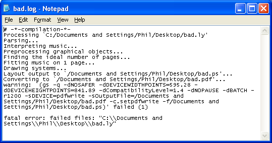

Windows
Nota: El LilyPond és un sistema de gravat musical basat en text; s’assembla més a un llenguatge de programació que a un programa gràfic d’edició de partitures. Abans de descarregar el LilyPond informeu-vos sobre la nostra Entrada de text.
Paquets
Descàrrega
-
 Windows: LilyPond 2.18.2-1
Per a Windows 2000, XP, Vista, Windows 7 i 8.
Windows: LilyPond 2.18.2-1
Per a Windows 2000, XP, Vista, Windows 7 i 8.
Instal·lació
- Ubiqueu el fitxer descarregat i feu doble clic sobre ell per a iniciar l’instal·lador. Seguiu les instruccions que us indica l’instal·lador; us recomanem que deixeu seleccionades totes les opcions d’instal·lació i que utilitzeu el camí d’instal·lació predeterminat. Cliqueu sobre el botó ‘finalitzar’ quan l’instal·lador acabi. El LilyPond està instal·lat.
Desinstal·lació
Per a la desintal·lació, escolliu entre:
- Ubicar l’apartat del LilyPond al menú Inici i escollir ‘Desinstal·la’. Cliqueu el botó ‘Finalitza’ quan acabi el programa de desintal·lació.
Execució des de la línia d’ordres
Nota: Si us satisfan les instruccions sobre la interfície gràfica, ignoreu aquestes instruccions.
Windows sobre la línia d’ordres
La forma més convenient d’executar el LilyPond és afegir la carpeta que conté els fitxers executables del programa a la variable d’entorn “Path”.
- Obriu l’apartat “Sistema” al Panell de Control, escolliu la pestanya Avançat i cliqueu sobre el botó Variables d’entorn.
-
Escolliu la variable “Path” de la llista de variables d’entorn
i cliqueu el botó Edita. S’obrirà una finestra amb el títol
“Edita una variable del sistema”: afegiu al final del “Valor
de la variable” el nom de la carpeta que conté els fitxers
executables del LilyPond de la manera següent:
[ruta preestablecida];CARPETA\LilyPond\usr\bin
Nota: CARPETA serà en general
C:\Fitxers de programa.i cliqueu el botó “Accepta” per tancar la finestra.
Invocar fitxers executables individuals
Els fitxers executables del LilyPond (com ara lilypond, lilypond-book, convert-ly i així successivament) es poden executar des de la línia d’ordres, invocant-los:
lilypond prova.ly
Compilació d’un fitxer
Nota: These instructions assume that you are using the built-in LilyPad editor. If you are using any of the programs described in Easier editing, consult the documentation for those programs should you have any problems.
Step 1. Create your ‘.ly’ file
Double-click the LilyPond icon on your desktop and an example file will open.

From the menus that appear along the top of the example file,
select File > Save as. Do not use the File > Save
for the example file as this will not work until you have given it a
valid LilyPond file name.

Choose a name for your file, for example ‘test.ly’.

Step 2. Compile
To turn your LilyPond file into a music score, you need to compile it. This can be done a number of ways – using drag and drop, with right-click, double-clicking or using the command line (a DOS box). We’ll look at the first three to start with.
1. Drag-and-drop the file directly onto the LilyPond icon on the desktop.

Not much will seem to happen, but after a short while, you should see two new files on your desktop – ‘test.log’ and ‘test.pdf’.
2. Right-click on the file and from the pop-up context menu and
choose Generate PDF.

3. Or simply double-click the ‘test.ly’.
Step 3. View output
‘test.pdf’ contains the engraved ‘test.ly’ file. Double-click it and it should open in your PDF viewer:

Other commands
To create a new file, begin by selecting File > New from
within any previously created file or File > Open to open and
edit any files you have saved before. You can also edit a file by
right-clicking it and selecting Edit source.
You must save any edits you make before you try to compile your file. If the PDF file is not created or the output is not what you expected, check the log file that will have been created during the compilation attempt for any errors.

This log file is overwritten each time you compile your LilyPond file.
If you are viewing your file in a PDF viewer, then you must close the PDF if you wish to try a new compilation as it may fail to create the new PDF while it is still being viewed.
Legalismes
Es reconeix el copyright i la marca registrada de tots els logotips i imatges de productes.
La “imatge dels quatre rectangles de colors” no és una marca registrada. És obra de Rohitbd i està posada sota la llicència de Documentació Lliure del GNU, versió 1.2. Trobem aquesta imatge a aquesta pàgina de la Wikimedia Commons.
Altres idiomes: English, česky, deutsch, español, français, magyar, italiano, 日本語, nederlands, 中文.
Quant a la selecció automàtica de la llengua.